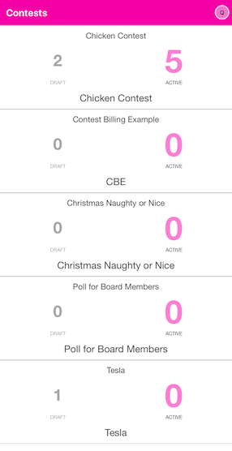
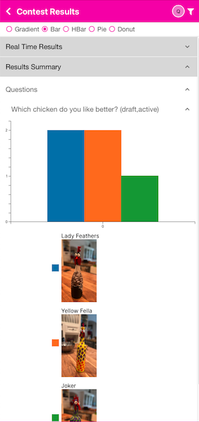
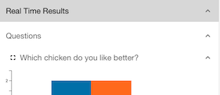
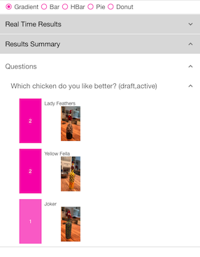
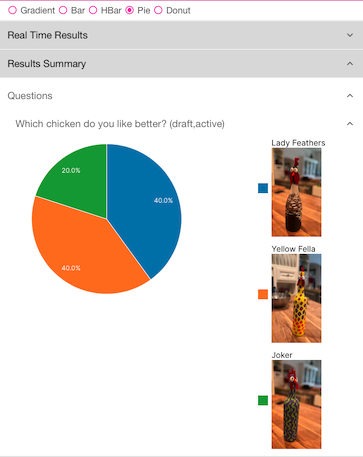

Results Tab
The Results tab is where you go to view the results of votes for your different Contests. You will see a list of all Contests and the number of votes each has received. The DRAFT votes are those that do not count towards the end totals. They are the ‘test’ votes that were submitted. The Active vote count shows the number of total votes for all Answers for a given Contest. The text at the top of each rectangle is the Contest Name. The text shown at the bottom of the rectangle is the Abbreviation (if any), or a repeat of the Contest Name from the Contest edit form.

Click on a Contest to see the details of the votes for that Contest. The Results Summary accordion will open by default. Click on the Questions accordion to see the list of Questions for this Contest and their results.

Filter and Chart Selection
You may select the results type for both Real Time and Summary at the top of the screen. Currently, the display types are Gradient (a colored gradient with vote count), Bar, Horizontal Bar (HBar), Pie and Donut. Play around with them to see which type you like. It will be saved when you leave this section.
There is also a filter icon in the upper right. You may click on this to show votes only from DRAFT or those from ACTIVE votes (the default).
Real Time Results
Opening the Real Time Results accordion will allow you to pick a single Question for which you would like to monitor in real-time each vote received. So, as people vote, you will see the results show up here. Click on the Question and the results will show and change as people vote. If you click on the full-screen icon, the display will be maximized for the device you are on. You could put the display near the voters so that they can see who is winning in real-time. To go back to ‘regular’ mode out of full-screen, click on the compress icon.

Results Summary
Opening the Results Summary accordion will show all of the Questions for this Contest. Click on the Question to view the results.
Gradient

Pie
